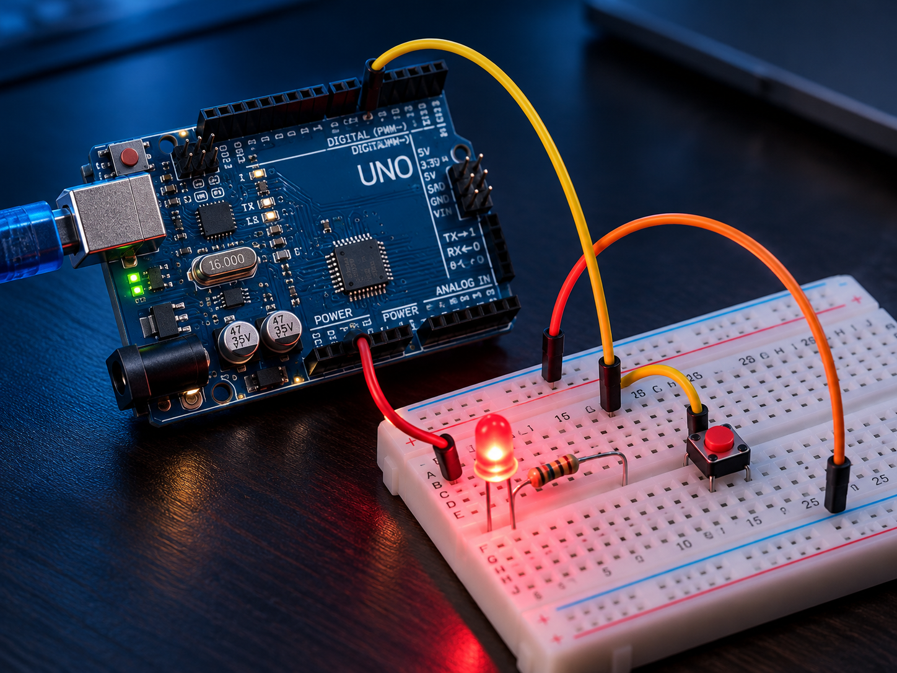

EXPERIMENTS · ELECTRONICS
Learning Electronics by Building
Small Arduino and breadboard experiments used to learn electronics from first principles.

Approach
Learn one circuit or component at a time, understand the electrical behaviour, then connect the hardware behaviour to the code controlling it.
Experiments so far
- LED blink
- Button + LED
- Breadboard connection and circuit troubleshooting
Focus
Building an intuitive understanding of circuits, inputs, outputs and embedded logic rather than treating projects as isolated recipes.
Future direction
Progress toward sensors, actuators, motor control and eventually robotics-oriented projects.